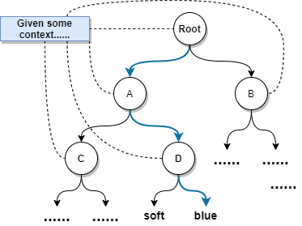

Introduction
The softmax function is widely used in the output layer of neural-network models for classification. In the binary case, it reduces to the familiar sigmoid mapping.
Given a score (logit) vector $x=(x_1,x_2)$, the softmax probabilities are
$$ P(X=x_1)=\frac{\exp(x_1)}{\exp(x_1)+\exp(x_2)},\quad P(X=x_2)=\frac{\exp(x_2)}{\exp(x_1)+\exp(x_2)} $$
In particular,
$$ P(X=x_1)=\sigma(x_1-x_2) $$
where $\sigma(z)=\frac{1}{1+\exp(-z)}$ is the sigmoid function.
In NLP applications, however, softmax can be expensive because it requires normalizing over the full vocabulary. For example, in the Continuous Bag-of-Words (CBOW) model,
$$ P(w\mid c)=\frac{\exp(S(w,c))}{\sum_{v\in V}\exp(S(v,c))} $$
where $S(w,c)$ is a scoring function. Computing the denominator requires summing over $|V|$ vocabulary items, which is $O(|V|)$ per update in a naïve implementation. To address this, various approximations and alternatives to softmax have been proposed.
Non-Sampling Softmax Variants
These methods avoid sampling-based objectives and keep an exactly normalized probability model.
Hierarchical Softmax (H-Softmax)
Hierarchical Softmax reduces the cost of computing a normalized distribution by factorizing the probability over a hierarchy of clusters (typically organized as a tree).
If the clusters are non-overlapping, each outcome $Y$ belongs to exactly one cluster $C(Y)$, and we obtain
$$ P(Y \mid X) = P(Y \mid C(Y), X)\,P(C(Y)\mid X) $$
H-Softmax applies this factorization recursively by organizing the vocabulary as a (usually binary) tree. For a balanced binary tree over a vocabulary $V$, the path length from root to any leaf is $O(\log |V|)$, so we can compute $P(w\mid c)$ by multiplying probabilities along the path rather than summing over all $|V|$ words.

H-Softmax reduces the per-example cost of computing $P(w\mid c)$ during training from $O(|V|)$ to $O(\log |V|)$.
Differentiated Softmax (D-Softmax)
Differentiated Softmax is motivated by a simple observation: word frequencies are highly skewed, and allocating the same embedding/output dimensionality to every word can be wasteful. D-Softmax assigns different representation sizes to different frequency bands: frequent words get higher-dimensional vectors, rare words use lower-dimensional vectors.
Character-level Softmax
Predict characters (or subword units) instead of whole words. The model generates a word as a sequence of characters and applies a softmax at each step over a much smaller character set.
Monte Carlo Softmax Approximations
These approaches use Monte Carlo sampling to approximate the softmax expectation in the gradient.
Cross-Entropy Loss with Softmax
For a target word index $i$ with logits $\mathbf{z}$ and predicted distribution $\hat{\mathbf{y}}=\mathrm{softmax}(\mathbf{z})$:
$$ L_i = -z_i + \log\left(\sum_{j=1}^{|V|} \exp(z_j)\right) $$
Gradient and the “expectation” form
$$ \nabla L_i = -\nabla z_i + \mathbb{E}_{k\sim \hat{\mathbf{y}}}!\left[\nabla z_k\right] $$
The expectation under the model distribution requires summing over all $|V|$ items. Sampling-based methods replace this full sum with a Monte Carlo estimate.
Importance Sampling
Sample from an easier proposal $Q$ and reweight:
$$ \mathbb{E}{X\sim P}[f(X)] = \mathbb{E}\right] $$}!\left[f(X)\frac{P(X)}{Q(X)
Self-normalized importance sampling gives a ratio estimator that doesn’t require computing $Z$ exactly, but is biased in general.
Noise-Contrastive Estimation (NCE)
NCE reformulates learning as a binary classification problem: distinguish data samples from noise samples using the same underlying scoring function.
Let $D$ be a binary label where $D=1$ means $(w,c)$ comes from the data distribution $P^+$, and $D=0$ means $w$ comes from a noise distribution $P^-$. Using Bayes’ rule,
$$ P(D=1\mid w,c)=\frac{P^+(w\mid c)}{P^+(w\mid c)+k\,P^-(w)} $$
Many implementations fix $Z(c)=1$ (often called self-normalization), so $P^+(w\mid c)\approx \exp(S(w,c))$.
Why does NCE work?
As $k\to\infty$ (the noise-to-data ratio grows), $\frac{kP^-}{P^+ + kP^-} \to 1$, and the negative NCE gradient approaches the maximum-likelihood gradient:
$$ \nabla_\theta L_c \to -\sum_{w\in V} \left(P^{\mathcal{D}c}(w) - P^+(w\mid c)\right) \nabla\theta \log P^+(w\mid c) $$
This shares the same stationary points as maximum-likelihood training.
Negative Sampling
Negative sampling is often presented as a simplified, more practical variant of NCE. With a self-normalized approximation $P^+(w\mid c)\approx \exp(S(w,c))$, uniform noise $P^-(w)=1/|V|$, and $k=|V|$ (so $kP^-(w)=1$):
$$ L = -\sum_{(w,c)\in\mathcal{D}} \left[ \log \sigma(S(w,c)) + \sum_{i=1}^{|V|} \log \sigma(-S(w’_i,c)) \right] $$
This is the familiar logistic loss form: push up scores for positive pairs, push down scores for sampled negatives. In practice, negative sampling uses $k\ll |V|$ and a non-uniform noise distribution.
Tackling the Normalizing Constant Directly
Self-Normalization
Encourage the model to produce scores such that $Z(c)\approx 1$ by adding a penalty:
$$ L = -\sum_{(w,c)\in \mathcal{D}} \log P(w\mid c) + \alpha \sum_{(w,c)\in \mathcal{D}} (\log Z(c))^2 $$
At decoding time we then approximate $P(w\mid c) \approx \exp(S(w,c))$ because the model has been trained to keep $\log Z(c)$ close to $0$.
Sampling-Based Self-Normalization
Andreas and Klein (2015) [9] apply the penalty only on a sampled subset $\mathcal{D}’\subseteq \mathcal{D}$:
$$ L = -\sum_{(w,c)\in \mathcal{D}} \log P(w\mid c) + \frac{\alpha}{\gamma}\sum_{c\in \mathcal{D}’} (\log Z(c))^2 $$
where $\gamma\in(0,1)$ is the sampling rate. This reduces the work spent on explicitly controlling $Z(c)$ during training while still encouraging self-normalization.
Conclusions
The central challenge addressed by most softmax variants is how to avoid the expensive computation of the normalizing constant $Z(c)$ during training and/or inference.
Acknowledgements
This post follows the high-level ordering of variants from Ruder’s post [1], but takes a more math-oriented approach. The derivations and proofs presented here were written by me. Special thanks to Yixuan He for proofreading and helpful feedback.
References
- [1] Sebastian Ruder. On word embeddings — Part 2: Approximating the Softmax, 2016.
- [2] Morin, F. and Yoshua Bengio. “Hierarchical Probabilistic Neural Network Language Model.” AISTATS (2005).
- [3] Chen, Grangier, Auli. “Strategies for Training Large Vocabulary Neural Language Models.” ACL (2016).
- [4] Bengio and Senecal. “Quick Training of Probabilistic Neural Nets by Importance Sampling.” AISTATS (2003).
- [5] Gutmann & Hyvärinen. “Noise-contrastive estimation.” AISTATS (2010).
- [6] Mnih, A. and Y. Teh. “A fast and simple algorithm for training neural probabilistic language models.” ICML (2012).
- [7] Devlin et al. “Fast and Robust Neural Network Joint Models for Statistical Machine Translation.” ACL (2014).
- [8] Goldberger, J. and Oren Melamud. “Self-Normalization Properties of Language Modeling.” arXiv:1806.00913 (2018).
- [9] Andreas and Klein. “When and why are log-linear models self-normalizing?” HLT-NAACL (2015).